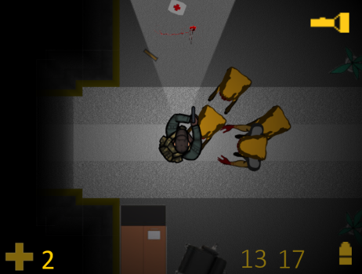

Black Mesa Remake
Le Demake de Black Mesa
En fin de premier trimestre à Ludus Academie, nous avons eu un examen dont le sujet était de faire un Demake d'un jeu connu et recent. Mon binôme et moi avions choisi la license Half Life du studio Valve avec l'opus Black Mesa, un remake de Half Life 1.
Le demake est un exercice de style ou l'objectif est de faire l'inverse d'un remake. Il s'agit donc d'inverser le processus d'amélioration et de caricaturer l'oeuvre originale.
Le Remake du Demake
En fin de première année, nous avons décidé avec mon binôme d'agrandir l'équipe et de faire un remake de notre demake. Nos intentions étaient claires : utiliser Unity, faire de la 3D, et impressionner nos professeurs.
En effet, les moteurs 3D n'étaient pas vraiment au programme de la première année. Mais nous avons décidé de sortir des sentiers battus et d'apprendre à les utiliser. Et on en a appris des choses...
Level design
Concernant le style de l'environnement, nous avons cherché à réaliser des salles et des éléments rappellant l'univers original.


Sound design
Nous avons dynamisé les sons. Il sont filtrés et modifiés selon l'environnement. Les sons lointains sont sourd et étouffés et les grandes salles produisent de l'echo. De plus, une attention particulière à été porté aux bruits de pas qui changent en fonction du sol sur lequel le joueur évolu.

Light design
Les lumières et éclairages ont été très travaillés afin d'offrir des environnements réalistes et cohérents. Nous avons utilisé différentes technologies telles que le HDR, le baking de lumières, les Light Probes (Orbes de refléxion) ou encore des Volumetric Scatter (Dispertion volumétrique).

Le personnage
Les animations
Le joueur incarne un agent de la sécurité. Le modèle 3D et les animations ont été obtenus sur internet. Nous avons dû organiser les animations avec un animator controler disponible avec le moteur Unity.


Raycast aim
Afin d'être précis dans les tirs du joueur, nous avons utilisé des raycast pour prédire si le tir touche sa cible avant même que l'animation ne se joue.


Le Head Crab
Véritable icone de la pop culture, le Head Crab est un ennemi de base de la license. Cet ennemi cherche à sauter sur la tête de ses victimes pour s'accoupler avec. Nous avons particulièrement travaillé sur cet créature à la fois pour ne pas la rater mais aussi pour le plaisir de la recréer la plus fidèlement possible.
Modélisation, rigging et animation
Nous avons trouvé un modèle lowpoly d'un head crab sur internet. Nous l'avons utilisé comme base pour notre mesh que nous avons retravaillé. Ensuite, nous l'avons rig (création d'un squelette) et animé.

Le texturing
Concernant les textures, celles fournis avec le modèle lowpoly ne convenaient plus. Nous avons alors fait un nouveau mapping du modèle puis nous l'avons texturé à l'aide de Substance Painter.
Les sons
Afin d'être un maximum fidèle à l'oeuvre originale, nous avons utilisé les sons originaux inimitables :
Le ragdoll
Le ragdoll du headcrab n'a pas été une mince affaire. En effet, dès que l'on touche à de la physique et surtout avec un objet complexe tel qu'un squelette, ça devient rapidement n'importe quoi. Néanmoins, nous somme arrivé à un équilibre vraiment convainquant et nous en sommes très fier !


L'IA'
Pour que le Head Crab soit un véritable ennemi, il faut qu'il en ai le comportement. Nous lui avons codé un comportement simple mais efficasse. S'il vous voit, il vous suit et s'il est assez proche, il vous saute dessus. Concernant, ses déplacements, le Head Crab suit une navigation map.